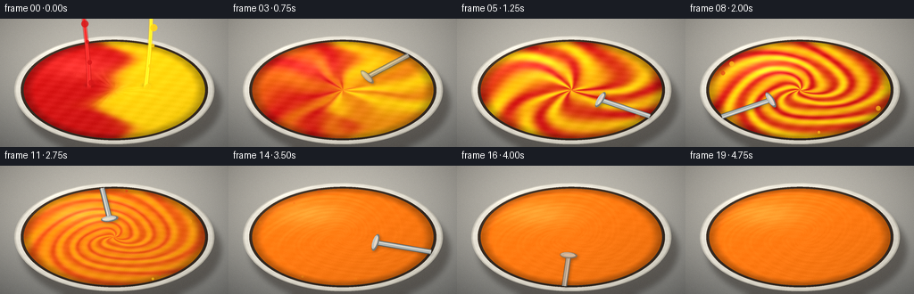
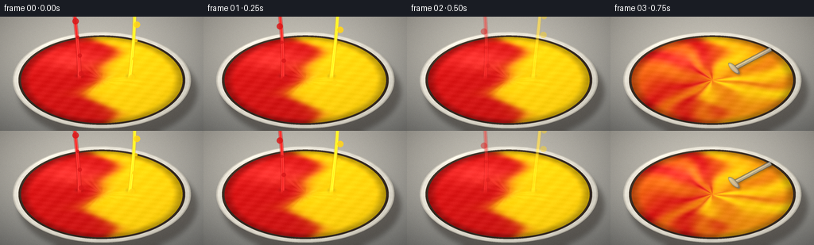
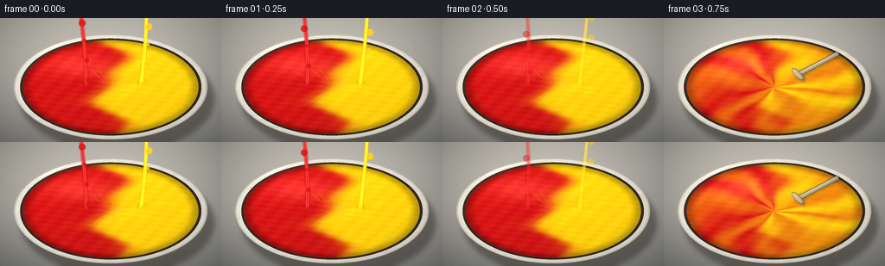

CODING AGENTS AS PIXEL WORLD MODELS
traex/DeepSeek-V4.1-Flash · phygen_122
点击播放 · 原生 RGB 像素
逐轮保存的候选
回放视频、检查图与代码变化。
每份候选均可单独播放。实际图片检查记录在下方工具轨迹中。
候选 01播放与检查图
点击播放 · 原生 RGB 像素


展开代码变化
--- 上一保存版本
+++ 本次保存版本
@@ -0,0 +1,426 @@
+"""Procedural RGB render for the red/yellow paint mixing prompt."""
+
+from pathlib import Path
+
+import numpy as np
+from PIL import Image, ImageDraw, ImageFilter
+
+import artifact_io
+
+
+CASE_DIR = Path(__file__).resolve().parent
+WIDTH, HEIGHT, FPS, FRAME_COUNT = 256, 144, 4, 20
+SS = 4
+RW, RH = WIDTH * SS, HEIGHT * SS
+
+
+def smoothstep(edge0, edge1, value):
+ value = np.clip((value - edge0) / (edge1 - edge0), 0.0, 1.0)
+ return value * value * (3.0 - 2.0 * value)
+
+
+def mix_rgb(first, second, amount):
+ amount = np.asarray(amount, dtype=np.float32)
+ if amount.ndim == 2:
+ amount = amount[..., None]
+ return first * (1.0 - amount) + second * amount
+
+
+def alpha_composite_rgba(base, overlay):
+ return Image.alpha_composite(base, overlay)
+
+
+def rotated_ellipse_points(cx, cy, rx, ry, angle, count=80):
+ angles = np.linspace(0.0, 2.0 * np.pi, count, endpoint=False)
+ local_x = rx * np.cos(angles)
+ local_y = ry * np.sin(angles)
+ cos_a, sin_a = np.cos(angle), np.sin(angle)
+ points = np.column_stack(
+ (
+ cx + local_x * cos_a - local_y * sin_a,
+ cy + local_x * sin_a + local_y * cos_a,
+ )
+ )
+ return [tuple(point) for point in points]
+
+
+def make_background():
+ yy, xx = np.mgrid[0:RH, 0:RW].astype(np.float32)
+ nx = xx / (RW - 1)
+ ny = yy / (RH - 1)
+
+ # A warm neutral studio surface with a soft pool of light behind the bowl.
+ top = np.array([190, 187, 179], dtype=np.float32)
+ bottom = np.array([126, 127, 125], dtype=np.float32)
+ gradient = np.clip(0.20 + 0.72 * ny + 0.08 * nx, 0.0, 1.0)
+ rgb = top[None, None, :] * (1.0 - gradient[..., None]) + bottom[None, None, :] * gradient[..., None]
+
+ pool = np.exp(-(((nx - 0.44) / 0.46) ** 2 + ((ny - 0.44) / 0.42) ** 2))
+ rgb += pool[..., None] * np.array([18.0, 16.0, 12.0], dtype=np.float32)
+
+ # Fine, deterministic surface grain keeps the background from looking flat.
+ rng = np.random.default_rng(122)
+ grain = rng.normal(0.0, 1.7, size=(RH, RW, 1)).astype(np.float32)
+ rgb += grain
+ vignette = np.clip(1.12 - 0.32 * (((nx - 0.5) * 1.55) ** 2 + ((ny - 0.5) * 1.35) ** 2), 0.72, 1.05)
+ rgb *= vignette[..., None]
+ return np.clip(rgb, 0.0, 255.0).astype(np.uint8)
+
+
+def bowl_geometry():
+ return {
+ "cx": 0.5 * RW,
+ "cy": 0.555 * RH,
+ "rx": 0.438 * RW,
+ "ry": 0.424 * RH,
+ "inner_rx": 0.410 * RW,
+ "inner_ry": 0.392 * RH,
+ "paint_rx": 0.397 * RW,
+ "paint_ry": 0.377 * RH,
+ }
+
+
+def render_bowl_and_paint(t):
+ geometry = bowl_geometry()
+ cx, cy = geometry["cx"], geometry["cy"]
+ rx, ry = geometry["rx"], geometry["ry"]
+ inner_rx, inner_ry = geometry["inner_rx"], geometry["inner_ry"]
+ paint_rx, paint_ry = geometry["paint_rx"], geometry["paint_ry"]
+
+ yy, xx = np.mgrid[0:RH, 0:RW].astype(np.float32)
+ u = (xx - cx) / rx
+ v = (yy - cy) / ry
+ rr = np.sqrt(u * u + v * v)
+ outer_mask = rr <= 1.0
+
+ ui = (xx - cx) / inner_rx
+ vi = (yy - cy) / inner_ry
+ inner_mask = ui * ui + vi * vi <= 1.0
+
+ up = (xx - cx) / paint_rx
+ vp = (yy - cy) / paint_ry
+ q = np.sqrt(up * up + vp * vp)
+ paint_mask = q <= 1.0
+
+ rgb = make_background().astype(np.float32)
+
+ # Soft cast shadow and contact shadow.
+ shadow = Image.new("RGBA", (RW, RH), (0, 0, 0, 0))
+ shadow_draw = ImageDraw.Draw(shadow)
+ shadow_draw.ellipse(
+ (
+ cx - rx + 0.030 * RW,
+ cy - ry + 0.095 * RH,
+ cx + rx + 0.030 * RW,
+ cy + ry + 0.095 * RH,
+ ),
+ fill=(38, 33, 29, 115),
+ )
+ shadow = shadow.filter(ImageFilter.GaussianBlur(0.022 * RH))
+ rgb = np.asarray(Image.alpha_composite(Image.fromarray(rgb.astype(np.uint8)).convert("RGBA"), shadow))[..., :3].astype(np.float32)
+
+ # Bowl rim: ceramic is brightest on the upper-left and falls into shadow
+ # along the lower-right edge.
+ ceramic = np.array([226.0, 222.0, 210.0], dtype=np.float32)
+ light = np.clip(-0.58 * u - 0.76 * v, -1.0, 1.0)
+ rim_rgb = ceramic[None, None, :] + (9.0 + 18.0 * light)[..., None]
+ rim_rgb *= (0.93 + 0.08 * (1.0 - rr))[..., None]
+
+ angle = np.arctan2(v, u)
+ top_glint = np.exp(-((angle + 2.23) / 0.28) ** 2) * np.exp(-((rr - 0.968) / 0.017) ** 2)
+ rim_rgb += top_glint[..., None] * np.array([24.0, 23.0, 20.0], dtype=np.float32)
+ outer_edge = smoothstep(0.975, 0.995, rr) * (rr <= 1.0)
+ rim_rgb -= outer_edge[..., None] * 38.0
+ inner_edge = smoothstep(0.965, 1.0, rr) * inner_mask
+ rim_rgb -= inner_edge[..., None] * 20.0
+ rim_noise = (
+ 2.2 * np.sin(37.0 * u + 19.0 * v)
+ + 1.3 * np.sin(71.0 * v - 13.0 * u)
+ )
+ rim_rgb += rim_noise[..., None]
+ rgb[outer_mask] = rim_rgb[outer_mask]
+
+ # The visible inner wall is dark and warm, giving the paint depth.
+ wall_q = np.sqrt(ui * ui + vi * vi)
+ wall_t = np.clip((wall_q - q.max() * 0.0) / 1.0, 0.0, 1.0)
+ wall_rgb = np.array([77.0, 63.0, 53.0], dtype=np.float32) * (1.0 - wall_t[..., None] * 0.34)
+ wall_rgb += np.clip(-0.35 * ui - 0.55 * vi, 0.0, 1.0)[..., None] * np.array([24.0, 19.0, 14.0], dtype=np.float32)
+ wall_mask = inner_mask & ~paint_mask
+ rgb[wall_mask] = wall_rgb[wall_mask]
+
+ # Paint-flow fields. The opening frame is two equal lobes; the central
+ # differential rotation forms marbled spiral arms once stirring starts.
+ progress = np.clip((t - 2.0) / 13.0, 0.0, 1.0)
+ pattern_in = smoothstep(0.0, 0.17, progress)
+ finish = smoothstep(0.48, 0.97, progress)
+
+ theta = np.arctan2(vp, up)
+ stir_phase = max(0.0, t - 2.0) * 0.73
+ twist = 5.9 * smoothstep(0.0, 0.88, progress)
+ ripple = 0.20 * np.sin(3.0 * theta - 0.38 * stir_phase)
+ ripple += 0.10 * np.sin(6.0 * q + 0.55 * stir_phase)
+ phi = theta - stir_phase - twist * np.power(np.clip(1.0 - q, 0.0, 1.0), 1.22) + ripple
+ bands = 0.5 + 0.5 * np.cos(7.0 * phi + 2.25 * q - 0.34 * stir_phase)
+ fine_bands = 0.5 + 0.5 * np.cos(13.0 * phi - 4.0 * q + 0.8)
+ bands = np.clip(0.82 * bands + 0.18 * fine_bands, 0.0, 1.0)
+
+ split_boundary = up + 0.15 * np.sin(4.3 * vp + 0.7) + 0.075 * np.sin(9.0 * vp - 1.8)
+ split_alpha = 0.5 + 0.5 * np.tanh(split_boundary / 0.10)
+ split_alpha += 0.05 * np.sin(11.0 * vp + 4.0 * up) * np.exp(-(split_boundary / 0.30) ** 2)
+ split_alpha = np.clip(split_alpha, 0.0, 1.0)
+
+ color_alpha = split_alpha * (1.0 - pattern_in) + bands * pattern_in
+ color_alpha += (0.5 - color_alpha) * smoothstep(0.48, 0.99, progress) * 0.965
+
+ red = np.array([204.0, 25.0, 26.0], dtype=np.float32)
+ yellow = np.array([255.0, 211.0, 20.0], dtype=np.float32)
+ orange = np.array([245.0, 119.0, 22.0], dtype=np.float32)
+
+ paint_rgb = mix_rgb(red[None, None, :], yellow[None, None, :], color_alpha)
+ paint_rgb = mix_rgb(paint_rgb, orange[None, None, :], finish * 0.965)
+
+ # Fine pigment variation and a light surface undulation.
+ pigment = (
+ 3.4 * np.sin(31.0 * up + 17.0 * vp + 0.3 * stir_phase)
+ + 2.2 * np.sin(57.0 * vp - 13.0 * up - 0.4 * stir_phase)
+ ) * (1.0 - 0.45 * finish)
+ paint_rgb += pigment[..., None]
+
+ light_paint = 1.025 - 0.075 * (0.62 * up + 0.78 * vp)
+ paint_rgb *= light_paint[..., None]
+
+ # Broad window reflection plus narrow highlights along the marbled ridges.
+ broad_sheen = np.exp(-(((up + 0.37) / 0.38) ** 2 + ((vp + 0.48) / 0.25) ** 2))
+ paint_rgb += broad_sheen[..., None] * np.array([32.0, 31.0, 27.0], dtype=np.float32)
+
+ band_gx = np.gradient(bands, axis=1)
+ band_gy = np.gradient(bands, axis=0)
+ band_edges = np.sqrt(band_gx * band_gx + band_gy * band_gy)
+ ridge_glint = smoothstep(0.018, 0.070, band_edges)
+ ridge_glint *= (0.28 + 0.72 * np.clip(-0.45 * up - 0.72 * vp, 0.0, 1.0))
+ ridge_glint *= 1.0 - 0.55 * finish
+ paint_rgb += ridge_glint[..., None] * np.array([29.0, 27.0, 22.0], dtype=np.float32)
+
+ edge_shade = 0.72 + 0.28 * (1.0 - smoothstep(0.86, 1.0, q))
+ paint_rgb *= edge_shade[..., None]
+ paint_rgb = np.clip(paint_rgb, 0.0, 255.0)
+ rgb[paint_mask] = paint_rgb[paint_mask]
+
+ image = Image.fromarray(np.clip(rgb, 0.0, 255.0).astype(np.uint8)).convert("RGBA")
+ return image, geometry
+
+
+def render_pour(image, geometry, t):
+ if t > 3:
+ return image
+
+ opacity = 1.0 if t <= 1 else max(0.0, 1.0 - (t - 1.0) / 2.0)
+ if opacity <= 0.0:
+ return image
+
+ cx, cy = geometry["cx"], geometry["cy"]
+ paint_ry = geometry["paint_ry"]
+ yy, xx = np.mgrid[0:RH, 0:RW].astype(np.float32)
+ rgb = np.asarray(image)[..., :3].astype(np.float32)
+ alpha = np.asarray(image)[..., 3].astype(np.float32) / 255.0
+
+ streams = (
+ (-0.31 * geometry["rx"], np.array([211.0, 27.0, 29.0], dtype=np.float32), 0.1),
+ (0.31 * geometry["rx"], np.array([255.0, 211.0, 22.0], dtype=np.float32), 1.7),
+ )
+ for stream_x, color, phase in streams:
+ start_y = -0.02 * RH
+ end_y = cy - 0.10 * paint_ry
+ curve = 6.5 * SS * np.sin(2.6 * yy / RH + phase + 0.38 * t)
+ center_x = cx + stream_x + curve
+ width = (0.0135 * RW) * (0.88 + 0.20 * (yy / RH))
+ distance = np.abs(xx - center_x)
+ vertical_mask = (yy >= start_y) & (yy <= end_y)
+ stream_mask = np.clip((width - distance) / (2.2 * SS), 0.0, 1.0) * vertical_mask
+
+ # Rounded impact head, with the stream narrowing slightly as it lands.
+ impact_y = end_y
+ impact = np.exp(-(((xx - center_x) / (width * 1.35)) ** 2 + ((yy - impact_y) / (0.018 * RH)) ** 2))
+ stream_mask = np.maximum(stream_mask, impact * 0.72)
+
+ edge_light = np.clip(1.0 - (distance / np.maximum(width, 1.0)) ** 2, 0.0, 1.0)
+ stream_rgb = color[None, None, :] * (0.72 + 0.36 * edge_light[..., None])
+ glint = np.exp(-((distance - 0.34 * width) / (0.16 * width + 1.0)) ** 2)
+ stream_rgb += glint[..., None] * np.array([42.0, 39.0, 33.0], dtype=np.float32)
+
+ a = np.clip(stream_mask * opacity, 0.0, 1.0)[..., None]
+ rgb = rgb * (1.0 - a) + stream_rgb * a
+
+ # Small moving droplets make the pour feel rapid rather than static.
+ droplet_layer = Image.new("RGBA", (RW, RH), (0, 0, 0, 0))
+ draw = ImageDraw.Draw(droplet_layer)
+ for index, (stream_x, color, phase) in enumerate(streams):
+ for drop in range(4):
+ y = ((0.18 + 0.16 * drop + 0.045 * t + 0.03 * index) % 0.62) * RH
+ x = cx + stream_x + 10.0 * SS * np.sin(2.1 * y / RH + phase)
+ radius = (2.0 + 0.65 * drop) * SS
+ alpha_value = int(215 * opacity)
+ draw.ellipse(
+ (x - radius, y - radius, x + radius, y + radius),
+ fill=(int(color[0]), int(color[1]), int(color[2]), alpha_value),
+ )
+ image = Image.fromarray(np.clip(rgb, 0.0, 255.0).astype(np.uint8)).convert("RGBA")
+ return alpha_composite_rgba(image, droplet_layer)
+
+
+def render_spoon(image, geometry, t):
+ if t < 3 or t > 18:
+ return image
+
+ opacity = 1.0
+ if t == 3:
+ opacity = 0.72
+ elif t >= 16:
+ opacity = max(0.0, 1.0 - (t - 15.0) / 4.0)
+ if opacity <= 0.0:
+ return image
+
+ cx, cy = geometry["cx"], geometry["cy"]
+ prx, pry = geometry["paint_rx"], geometry["paint_ry"]
+ angle = -0.78 + (t - 3.0) * 0.67
+ head_x = cx + 0.38 * prx * np.cos(angle)
+ head_y = cy + 0.38 * pry * np.sin(angle)
+ outer_x = cx + 1.02 * prx * np.cos(angle)
+ outer_y = cy + 1.02 * pry * np.sin(angle)
+
+ shadow = Image.new("RGBA", (RW, RH), (0, 0, 0, 0))
+ shadow_draw = ImageDraw.Draw(shadow)
+ offset = 0.010 * RH
+ shadow_draw.line(
+ (head_x + offset, head_y + offset, outer_x + offset, outer_y + offset),
+ fill=(25, 22, 20, 82),
+ width=int(0.021 * RW),
+ )
+ shadow_draw.polygon(
+ rotated_ellipse_points(
+ head_x + offset,
+ head_y + offset,
+ 0.037 * RW,
+ 0.023 * RH,
+ angle + np.pi * 0.5,
+ ),
+ fill=(25, 22, 20, 90),
+ )
+ shadow = shadow.filter(ImageFilter.GaussianBlur(0.012 * RH))
+ image = alpha_composite_rgba(image, shadow)
+
+ spoon = Image.new("RGBA", (RW, RH), (0, 0, 0, 0))
+ draw = ImageDraw.Draw(spoon)
+ draw.line(
+ (head_x, head_y, outer_x, outer_y),
+ fill=(91, 98, 99, 255),
+ width=int(0.024 * RW),
+ )
+ draw.line(
+ (head_x, head_y, outer_x, outer_y),
+ fill=(174, 181, 180, 255),
+ width=int(0.017 * RW),
+ )
+
+ normal_x, normal_y = -np.sin(angle), np.cos(angle)
+ highlight_offset = 0.0032 * RW
+ draw.line(
+ (
+ head_x - normal_x * highlight_offset,
+ head_y - normal_y * highlight_offset,
+ outer_x - normal_x * highlight_offset,
+ outer_y - normal_y * highlight_offset,
+ ),
+ fill=(241, 242, 237, 230),
+ width=max(2, int(0.0042 * RW)),
+ )
+
+ head_points = rotated_ellipse_points(
+ head_x,
+ head_y,
+ 0.038 * RW,
+ 0.0235 * RH,
+ angle + np.pi * 0.5,
+ )
+ draw.polygon(head_points, fill=(115, 121, 121, 255))
+ inner_points = rotated_ellipse_points(
+ head_x - 0.003 * RW,
+ head_y - 0.003 * RH,
+ 0.031 * RW,
+ 0.0185 * RH,
+ angle + np.pi * 0.5,
+ )
+ draw.polygon(inner_points, fill=(189, 195, 193, 255))
+ glint_points = rotated_ellipse_points(
+ head_x - normal_x * 0.005 * RW,
+ head_y - normal_y * 0.005 * RH,
+ 0.025 * RW,
+ 0.009 * RH,
+ angle + np.pi * 0.5,
+ )
+ draw.polygon(glint_points, fill=(236, 239, 234, 210))
+
+ if opacity < 1.0:
+ alpha_channel = spoon.getchannel("A").point(lambda value: int(value * opacity))
+ spoon.putalpha(alpha_channel)
+ return alpha_composite_rgba(image, spoon)
+
+
+def add_rim_splashes(image, geometry, t):
+ if t < 4 or t > 14:
+ return image
+
+ strength = smoothstep(4.0, 7.0, t) * (1.0 - smoothstep(12.0, 15.0, t))
+ layer = Image.new("RGBA", (RW, RH), (0, 0, 0, 0))
+ draw = ImageDraw.Draw(layer)
+ cx, cy = geometry["cx"], geometry["cy"]
+ rx, ry = geometry["inner_rx"], geometry["inner_ry"]
+ rng = np.random.default_rng(900 + t)
+ for _ in range(5):
+ angle = rng.uniform(-np.pi, np.pi)
+ radial = rng.uniform(0.84, 0.96)
+ x = cx + radial * rx * np.cos(angle)
+ y = cy + radial * ry * np.sin(angle)
+ radius = rng.uniform(1.2, 2.8) * SS
+ color_selector = rng.uniform()
+ if color_selector < 0.45:
+ color = (219, 67, 29)
+ elif color_selector < 0.78:
+ color = (244, 151, 28)
+ else:
+ color = (252, 202, 30)
+ draw.ellipse(
+ (x - radius, y - radius, x + radius, y + radius),
+ fill=(*color, int(170 * strength)),
+ )
+ return alpha_composite_rgba(image, layer)
+
+
+def final_grade(image):
+ image = image.convert("RGB").resize((WIDTH, HEIGHT), Image.Resampling.LANCZOS)
+ array = np.asarray(image).astype(np.float32)
+ rng = np.random.default_rng(404)
+ grain = rng.normal(0.0, 0.75, size=(HEIGHT, WIDTH, 1)).astype(np.float32)
+ array += grain
+
+ # Subtle photographic contrast and a warm highlight lift.
+ array = (array - 127.5) * 1.035 + 127.5
+ array += np.array([1.5, 0.4, -0.8], dtype=np.float32)
+ return np.clip(array, 0.0, 255.0).astype(np.uint8)
+
+
+def generate():
+ frames = []
+ for frame_index in range(FRAME_COUNT):
+ image, geometry = render_bowl_and_paint(frame_index)
+ image = render_pour(image, geometry, frame_index)
+ image = render_spoon(image, geometry, frame_index)
+ image = add_rim_splashes(image, geometry, frame_index)
+ frames.append(final_grade(image))
+ return np.stack(frames)
+
+
+if __name__ == "__main__":
+ frames = generate()
+ artifact_io.save(frames, CASE_DIR)
+ print(f"saved {len(frames)} frames to {CASE_DIR}")
候选 02播放与检查图
点击播放 · 原生 RGB 像素

展开代码变化
--- 上一保存版本
+++ 本次保存版本
@@ -177,7 +177,7 @@
orange = np.array([245.0, 119.0, 22.0], dtype=np.float32)
paint_rgb = mix_rgb(red[None, None, :], yellow[None, None, :], color_alpha)
- paint_rgb = mix_rgb(paint_rgb, orange[None, None, :], finish * 0.965)
+ paint_rgb = mix_rgb(paint_rgb, orange[None, None, :], finish * 0.985)
# Fine pigment variation and a light surface undulation.
pigment = (
@@ -191,7 +191,8 @@
# Broad window reflection plus narrow highlights along the marbled ridges.
broad_sheen = np.exp(-(((up + 0.37) / 0.38) ** 2 + ((vp + 0.48) / 0.25) ** 2))
- paint_rgb += broad_sheen[..., None] * np.array([32.0, 31.0, 27.0], dtype=np.float32)
+ sheen_strength = 32.0 * (1.0 - 0.42 * finish)
+ paint_rgb += broad_sheen[..., None] * np.array([sheen_strength, sheen_strength, sheen_strength * 0.84], dtype=np.float32)
band_gx = np.gradient(bands, axis=1)
band_gy = np.gradient(bands, axis=0)
可观测工具轨迹
实际执行的命令与返回图片。
命令 1exit 0
/bin/bash -c "pwd && rg --files -g 'prompt.txt' -g 'GENERATION_RULES.md' -g 'task_spec.json' -g '"'!**/.git/**'"'"
命令 2exit 0
/bin/bash -c "find . -maxdepth 2 -type f -not -path './.git/*' -printf '%p\\n' | sort | head -200"
命令 3exit 0
/bin/bash -c 'git status --short --branch'
命令 4exit 0
/bin/bash -c 'cat GENERATION_RULES.md'
命令 5exit 0
/bin/bash -c 'cat prompt.txt'
命令 6exit 0
/bin/bash -c 'cat task_spec.json'
命令 7exit 0
/bin/bash -c "sed -n '1,240p' artifact_io.py"
命令 8exit 0
/bin/bash -c 'python generate.py'
命令 9exit 0
/bin/bash -c "python - <<'PY'
from PIL import Image
im = Image.open('inspection.png')
print('inspection', im.size, im.mode)
for i in [0, 3, 7, 11, 15, 19]:
a = Image.open(f'frames/{i:02d}.png')
print(i, a.getbbox(), a.resize((32,18)).getextrema())
PY"命令 10exit 0
/bin/bash -c "python - <<'PY'
from PIL import Image
import numpy as np
for i in range(20):
a=np.asarray(Image.open(f'frames/{i:02d}.png')).astype(float)
# central paint crop
p=a[30:133,25:231]
red=((p[:,:,0]>120)&(p[:,:,0]>p[:,:,1]*1.6)&(p[:,:,1]<90)).mean()
yellow=((p[:,:,0]>180)&(p[:,:,1]>130)&(p[:,:,2]<100)).mean()
orange=((p[:,:,0]>170)&(p[:,:,1]>65)&(p[:,:,1]<175)&(p[:,:,2]<80)).mean()
print(f'{i:02d}: red={red:.3f} yellow={yellow:.3f} orange={orange:.3f} mean={p.mean():.1f}')
PY"命令 11exit 0
/bin/bash -c "python - <<'PY'
from PIL import Image
import numpy as np
for fi in [0,3,7,11,15,19]:
a=np.asarray(Image.open(f'frames/{fi:02d}.png'))
# 64x36 nearest blocks
im=Image.fromarray(a).resize((64,36), Image.Resampling.NEAREST)
p=np.asarray(im)
out=[]
for row in p:
s=''
for r,g,b in row:
if r>175 and g>150 and b<100: c='Y'
elif r>160 and g>70 and g<150 and b<80: c='O'
elif r>120 and g<80 and b<80: c='R'
elif r>170 and g>160 and b>140: c='.'
elif r<105 and g<100 and b<95: c='#'
elif abs(int(r)-int(g))<20 and abs(int(g)-int(b))<20: c='m'
else: c=' '
s+=c
out.append(s)
print('\\nFRAME',fi)
print('\\n'.join(out))
PY"命令 12exit 0
/bin/bash -c "python - <<'PY'
from PIL import Image
import numpy as np
ims=[np.asarray(Image.open(f'frames/{i:02d}.png')).astype(np.int16) for i in range(20)]
for i in range(1,20):
d=np.abs(ims[i]-ims[i-1])
print(f'{i-1:02d}->{i:02d}: mean={d.mean():.2f} p99={np.percentile(d,99):.0f} changed={(d.max(2)>8).mean():.3f}')
PY"命令 13exit 0
/bin/bash -c "python - <<'PY'
from PIL import Image
import numpy as np
for fi in [0,3,7,11,15,19]:
im=Image.open(f'frames/{fi:02d}.png')
im.resize((1024,576), Image.Resampling.LANCZOS).save(f'frame_{fi:02d}_large.png')
PY"命令 14exit 0
/bin/bash -c 'which ffmpeg || true; which ffprobe || true; du -h index.html pixels.npz frames/*.png | tail -5'
命令 15exit 0
/bin/bash -c "sed -n '1,240p' player_template.html"
命令 16exit 0
/bin/bash -c "python - <<'PY'
from PIL import Image
import numpy as np
for fi in [0,3,7,11,15,19]:
a=np.asarray(Image.open(f'frames/{fi:02d}.png'))
print(fi, 'R', tuple(np.percentile(a[...,0],[1,50,99]).astype(int)), 'G', tuple(np.percentile(a[...,1],[1,50,99]).astype(int)), 'B', tuple(np.percentile(a[...,2],[1,50,99]).astype(int)))
PY"命令 17exit 0
/bin/bash -c "python - <<'PY'
from PIL import Image
import numpy as np
for fi in [0,7,11,15,19]:
im=Image.open(f'frames/{fi:02d}.png')
# box central surface 220x105
im.crop((18,20,238,126)).resize((660,318), Image.Resampling.LANCZOS).save(f'crop_{fi:02d}.png')
PY"命令 18exit 0
/bin/bash -c "python - <<'PY'
from PIL import Image
import numpy as np
for fi in [15,19]:
a=np.asarray(Image.open(f'frames/{fi:02d}.png'))
p=a[25:134,20:236]
m=(p[:,:,0]>180)&(p[:,:,1]>130)&(p[:,:,2]<100)
ys,xs=np.where(m)
print(fi, m.mean(), (xs.min()+20,ys.min()+25,xs.max()+20,ys.max()+25) if len(xs) else None)
# by 4x4 quadrants
for yy in range(0,109,27):
print([round(m[yy:min(yy+27,109),xx:min(xx+54,216)].mean(),2) for xx in range(0,216,54)])
PY"命令 19exit 0
/bin/bash -c "python - <<'PY'
from PIL import Image
import numpy as np
for fi in [0,1,2,3,4,5,6,7,8,9,10,11,12,13,14,15,16,17,18,19]:
a=np.asarray(Image.open(f'frames/{fi:02d}.png')).astype(float)
# core surface based on bowl ellipse
yy,xx=np.mgrid[:144,:256]
m=((xx-128)/101)**2+((yy-80)/54)**2<0.68
p=a[m]
r,g,b=p.T
red=((r>130)&(g<80)&(b<85)).mean()
yellow=((r>190)&(g>150)&(b<120)).mean()
orange=((r>170)&(g>65)&(g<155)&(b<100)).mean()
print(fi, f'red {red:.2f} yellow {yellow:.2f} orange {orange:.2f} RGB {p.mean(0).astype(int)}')
PY"命令 20exit 0
/bin/bash -c "python - <<'PY'
from PIL import Image
import numpy as np
for fi in [0,3,7,11,15,19]:
a=np.asarray(Image.open(f'frames/{fi:02d}.png')).astype(float)
yy,xx=np.mgrid[:144,:256]
m=((xx-128)/99)**2+((yy-79)/52)**2<0.8
p=a[m]
print(fi, np.round(p.mean(0)).astype(int), 'luma', round(p.mean(),1))
PY"命令 21exit 0
/bin/bash -c 'python generate.py'
命令 22exit 0
/bin/bash -c "python -m py_compile generate.py && python - <<'PY'
import json
from pathlib import Path
import numpy as np
from PIL import Image
spec=json.loads(Path('task_spec.json').read_text())
z=np.load('pixels.npz')['pixels']
print('tensor', z.shape, z.dtype, int(z.min()), int(z.max()))
print('frames', len(list(Path('frames').glob('*.png'))), Image.open('frames/00.png').size, Image.open('frames/19.png').mode)
for name in ['index.html','inspection.png','transition_check.png','pixels.npz']:
print(name, Path(name).stat().st_size)
assert z.shape == (spec['height'], spec['width'], spec['frames'])
assert len(list(Path('frames').glob('*.png'))) == spec['frames']
PY"命令 23exit 0
/bin/bash -c "python - <<'PY'
from PIL import Image
import numpy as np
for fi in [0,3,7,11,15,19]:
a=np.asarray(Image.open(f'frames/{fi:02d}.png')).astype(float)
yy,xx=np.mgrid[:144,:256]
m=((xx-128)/101)**2+((yy-80)/54)**2<0.68
p=a[m]; r,g,b=p.T
red=((r>130)&(g<80)&(b<85)).mean()
yellow=((r>190)&(g>150)&(b<120)).mean()
orange=((r>170)&(g>65)&(g<155)&(b<100)).mean()
print(fi, f'red={red:.2f} yellow={yellow:.2f} orange={orange:.2f}', np.round(p.mean(0)).astype(int))
PY"命令 24exit 0
/bin/bash -c "python - <<'PY'
from pathlib import Path
from PIL import Image
import numpy as np
for i in range(20):
a=np.asarray(Image.open(f'frames/{i:02d}.png'))
assert a.shape == (144,256,3) and a.dtype == np.uint8
# Ensure no accidental static duplicate run beyond the intentional pour opening.
hashes=[hash(Image.open(f'frames/{i:02d}.png').tobytes()) for i in range(20)]
print('unique frames', len(set(hashes)))
print('artifacts', all(Path(p).exists() for p in ['generate.py','index.html','pixels.npz','inspection.png','transition_check.png']))
print('frames 0/7/11/19 differ:', len({hashes[i] for i in [0,7,11,19]}) == 4)
PY"命令 25exit 0
/bin/bash -c "rg -n \"np\\.tau|cat|TODO|FIXME\" generate.py; ls -lh index.html pixels.npz inspection.png transition_check.png generate.py; git status --short -- generate.py frames index.html pixels.npz inspection.png transition_check.png"
命令 26exit 0
/bin/bash -c "find . -maxdepth 1 -type f -printf '%f\\n' | sort; find frames -maxdepth 1 -type f | wc -l"
命令 27exit 0
/bin/bash -c "python - <<'PY'
from pathlib import Path
for path in Path('.').glob('crop_*.png'):
path.unlink()
for path in Path('.').glob('frame_*_large.png'):
path.unlink()
print('\\n'.join(sorted(p.name for p in Path('.').iterdir() if p.is_file())))
PY"命令 28exit 0
/bin/bash -c "python - <<'PY'
from pathlib import Path
import json,re
html=Path('index.html').read_text()
assert '__DATA__' not in html and '__ID__' not in html
m=re.search(r'const DATA=(\\{.*?\\}),W=',html)
assert m
payload=json.loads(m.group(1))
print(payload['id'], payload['width'], payload['height'], payload['frames'], payload['fps'], len(payload['deltas']))
PY"命令 29exit 0
/bin/bash -c "python - <<'PY'
from PIL import Image
import numpy as np
# Verify key action beats with broad color coverage in the paint surface.
for fi in [0, 3, 7, 11, 19]:
a = np.asarray(Image.open(f'frames/{fi:02d}.png')).astype(float)
yy, xx = np.mgrid[:144, :256]
mask = ((xx-128)/101)**2 + ((yy-80)/54)**2 < 0.68
r, g, b = a[mask].T
red = ((r>130)&(g<80)&(b<85)).mean()
yellow = ((r>190)&(g>150)&(b<120)).mean()
orange = ((r>170)&(g>65)&(g<155)&(b<100)).mean()
print(f'frame {fi:02d}: red={red:.2f}, yellow={yellow:.2f}, orange={orange:.2f}')
PY"命令 30exit 0
/bin/bash -c "python - <<'PY'
from PIL import Image
import numpy as np
frames=[np.asarray(Image.open(f'frames/{i:02d}.png')).astype(np.int16) for i in range(20)]
for i in range(1,20):
d=np.abs(frames[i]-frames[i-1])
print(f'{i-1:02d}->{i:02d} mean={d.mean():.2f}')
PY"命令 31exit 0
/bin/bash -c "python - <<'PY'
from PIL import Image
import numpy as np
ims=[np.asarray(Image.open(f'frames/{i:02d}.png')) for i in range(20)]
print('first mean', ims[0].mean(axis=(0,1)).round(1), 'last mean', ims[-1].mean(axis=(0,1)).round(1))
print('frame sequence bytes', sum(im.nbytes for im in ims))
PY"保存候选 2 份；完成命令 31 次；可验证图片返回 0 张。原始 API 响应与完整日志保留在本地。